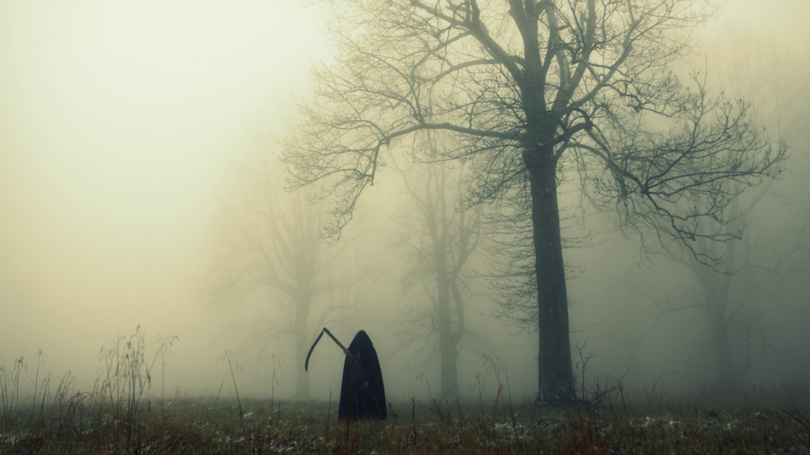
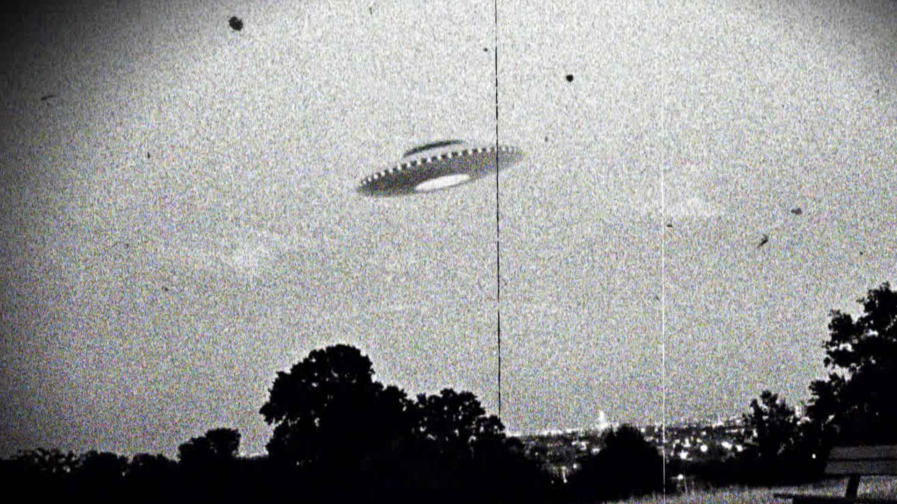

МИСТИКА
Что за чертовщина?
Места, где не стоит бывать
Аномальные зоны Беларуси: где не стоит бывать
Истории о всевозможных НЛО, кругах на полях и летающей утвари в квартирах вызывают улыбку у скептиков. Кажется, что это всего лишь фантастические сюжеты из американских триллеров и японских фильмов ужасов. Однако выяснилось, что Беларусь, по данным Международной уфологической организации, входит в ТОП-100 аномальных зон мира. И случаев появления неопознанных летающих, а также двигающихся объектов в наших городах и деревнях немало.
Белорусский полтергейст (д. Слобода, Смолевичский район)
История с космически-колдовским характером произошла в 1981 году в одном доме в деревне Слобода Смолевичского района. Ужасы начались после развода супругов, когда бывший муж потребовал, чтобы ему разрешили общаться с детьми. К слову, мать бывшего супруга была известной в здешних местах колдуньей и гадалкой. На протяжении долгого времени дом, в котором проживала бывшая жена с двумя дочками, представлял собой обитель зла. Сначала жители дома, а потом и вызванные на подмогу сотрудники милиции и парапсихологи наблюдали фантастические явления: стаканы летали, с потолка, откуда ни возьмись, падали куриные яйца и сыпалась мука. О том, что произошло с домом далее, история умалчивает. В советское время сотрудники КГБ умели надёжно скрывать информацию.
Смерть за смертью (д. Кривое Село, Заславский район)
Непогребённые останки умерших людей, по словам сведущих людей, могут иметь не только отрицательное энергетическое поле, но и оказывать прямое влияние на ближайшие населённые пункты. В послевоенное время возле д. Кривое село Заславского района обнаружилось такое захоронение. По мнению очевидцев, прослеживалась явная связь между этим захоронением и непрекращающимися смертями жителей деревни. Один за другим в течение месяца умирали жители села. Происходило это до тех пор, пока один из посещавших роковое место учёных не увидел, как сельские мальчишки играют в футбол... с человеческим черепом. На месте находки черепа были обнаружены останки погибших во время войны. После их погребения загадочные смерти прекратились, но сегодня в Кривом селе нет стариков. Люди попросту не доживают до старости.
Снежные круги (д. Квасовка, Гродненский район)
Один из самых фантастических сюжетов современной уфологии "сделал пометку" и на территории нашей страны. Прямо в Гродненском районе и прямо в деревне Квасовка возле местной школы 8 января 2008 года. Данные о появлении такой формации сразу же просочились в Интернет и всплыли в одном из блогов. Там же были размещены и фотографии спиралевидных художеств. Правда, отрицательного энергетического эффекта странные круги на снегу не имели. Правда, они внушали тихий ужас жителям несчастной деревни. И хотя предположения местных жителей о рукотворном характере загадочных пиктограмм более правдоподобны, чем представления уфологов о визите НЛО на белорусскую землю, тайна спиралей в деревне Квасовка пока остается не раскрытой.
Болотный водяной (Красное болото, Мозырский район)
Красное болото под Мозырем всегда славилось легендами о странных существах, почти сказочных, но реальных, которые обитают в его окрестностях. Одна из самых душещипательных историй, связанных с этим болотом, произошла в 2001 году. Очевидец рассказал в одном из интервью местной газете о случайной встрече с девочкой с глазами цвета мутной морской воды. Мужчина набирал воду в ручье, который находится неподалёку от Красного болота. Внезапно он заметил девочку, сидящую на камне близ болота. В тот момент, когда он уже хотел окликнуть её и предложить помощь, девочка внимательно посмотрела на него и протянула руку, полную красных ягод. Почему мужчина не взял эти ягоды в руки, он так и не помнит, однако появившийся из-за дерева его друг с канистрой для воды спугнул девочку. На пригорке остались лишь рассыпанные волчьи ягоды и запах перегноя.
Чертовщина человеческая (г. Лунинец)
История с лунинецкой чертовщиной датируется далёким 1933-м годом. Началось всё в одной семье, в которой в течение нескольких дней происходили удивительные вещи: то кто-то сено в конюшне разметает, то детскую люльку со всей силы раскачает, то масло в маслобойке взбивать начнёт. И всё без участия рук человеческих. Местные жители в течение долгого времени обходили злополучный дом стороной, а семья из несчастной хаты каждый вечер с ужасом ожидала ночи. Как водится, по совету местной бабки-целительницы жители дома отдали все долги и посетили могилы родственников. Однако ничего не помогло. С тех пор чёрт, который появился в Лунинце, является чуть ли не символом страха для всех жителей города. А поговаривают, что всё началось из-за денежного долга, который хозяева дома не хотели возвращать, за что и получили парочку "чертыхнутых" слов.
Ковалевское приведение (г. Брест)
Привидения и оборотни в районе Ковалёво города Бреста известны местным жителям не понаслышке. В течение долгого времени, с 1998 по 2003 год, группа энтузиастов, занимающихся изучением вопросов аномальных явлений в Брестской области, регистрировала многочисленные случаи, связанные с появлением неопознанных человекоподобных и звероподобных существ в домах местных жителей. Одним из самых популярных видений однозначно был признан плюшевый медведь, резко появляющийся в конце длинного коридора и стремительно приближающийся к смотрящему на него человеку. И всё бы ничего, если бы медведь не кусался. Безусловно, похоже на массовый психоз с участием популярного детского персонажа, однако, косвенные доказательства позволяют говорить о том, что приведение в действительности существует.
Паранормальные русалки (г. Городок)
Русалки - одни из самых популярных аномальных существ в Беларуси. Особенно последнее время, когда встречи с этими, казалось бы, сказочными персонажами, участились. Участились они и в Витебской области, особенно неподалёку от чудесного лесного озера. По легенде, в лесном озере у города Городок некогда сам Люцифер затопил церковь, чем и навлёк большое проклятие на эту местность. Сегодня увидеть там главных действующих лиц проклятой зоны - русалок - можно не только ночью, но и при свете дня. Спастись от них можно двумя способами: начертить круг, либо, завидев такую особу, сказать ей "Чур моя!" - говорят, это поможет не только не поддаться её чарам, но и "захватить" красавицу домой, где она будет трудолюбивой хозяйкой. Главная особенность русалок - их иссиня-голубые глаза, которые не двигаются, а лишь пронзительно смотрят на тебя, заманивая в свои озёра и болота. Так что будьте внимательны и осторожны!
НЛО приземлилось в Могилёве (д. Заходы, Шкловский район)
НЛО, пожалуй, является самым популярным аномальным объектом, о котором пишут и говорят. Его видят везде и по всему миру: в городах, деревнях, лесах, полях и над реками. Свою особо активную зону для встречи НЛО имеют и белорусы. Так, не единожды в Шкловском районе (д. Заходы), а также Круглянском районе (д. Комсевичи, Клепеничи, Шамовка и Бушовка) были зарегистрированы случаи появления в небе овальных дисков с чёрной полосой и тремя светящимися точками. Объект постоянно "зависал" над лугом перед деревнями и исчезал в течение нескольких минут. В интервью местной газете очевидцы рассказали о том, что никаких других объектов, кроме данной тарелки, они не видели. Что же это: привет с Марса или тайная военная разработка - пока остаётся загадкой. До первого вторжения, очевидно.
